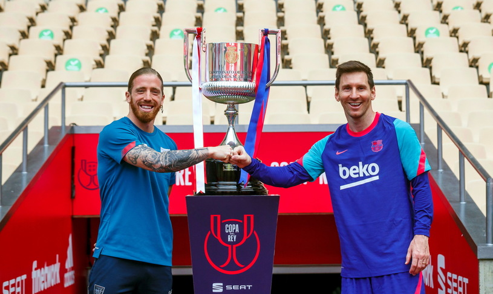

Po sukcesie live'a przed El Clásico mamy dla was kolejną transmisję, tym razem przed finałem Pucharu Króla między Barceloną a Athletikiem. Kogo tym razem posłuchacie? Gośćmi Piotrka Baleji są dziś Maciek Krawczyk (DissBlaster, założyciel kanału Footroll) oraz Aleksander Kowalczyk (mieszkający i pracujący w Kraju Basków trener UEFA Pro). Mamy nadzieję, że będziecie z nami! W trakcie live'a będziecie mogli zadawać pytania na chacie, a Mateusz i Magdalena Rudniccy, którzy zza kulis zajmują się realizacją tego wydarzenia, wybiorą najciekawsze z pytań, które zadamy naszym ekspertom. Przy okazji przypominamy, że nasz podcast Un Toc de La Rambla możecie znaleźć na platformie YouTube, a także Spotify, Anchor i wielu innych. Zapraszamy do odsłuchu! Koniecznie zostawcie komentarz, łapkę w górę pod filmem, podzielcie się odcinkiem ze znajomymi i motywujcie nas, subskrybując kanał.
Zgodnie z informacjami El País nowe władze Barcelony nie są zadowolone z postawy Griezmanna, zwłaszcza że piłkarz kosztował aż 120 milionów euro. W tym sezonie Francuz strzelił 14 goli w 42 meczach (trafia do siatki co 224 minuty) i zaliczył 11 asyst, ale mimo kilku przebłysków i solidnej pracy na boisku nie zdołał w pełni uzasadnić wydanej na niego kwoty. Problemem jest też temat znalezienia miejsca na boisku dla niego i dla Messiego. Obaj najlepiej czują się na pozycji „dziesiątki”, a gdy w końcu razem zostali tam obaj ustawieni przez Ronalda Koemana, mogło brakować gracza w innym miejscu, na skrzydle, środku ataku lub niżej w drugiej linii. Według El País z Barcelony dochodzą głosy, że klub powinien sprzedać Griezmanna, jeśli Messi zostanie w klubie. Nie chodzi tu jednak o temat relacji między dwoma gwiazdorami. Zdaniem El País są one znacznie lepsze niż na początku, a przyczynić miały się do tego również partnerki zawodników i wspólne rodzinne kolacje. Griezmann jest zresztą bardzo lubiany w szatni. Jeden z pracowników klubu porównuje go pod tym względem do Daniego Alvesa: „zawsze ma dobry nastrój, żartuje, łączy różne grupy w szatni”. Zgodnie z tymi informacjami Griezmann ma często przebywać ze swoimi rodakami, ale też rozmawia z młodszymi piłkarzami jak Araujo, Riqui czy Ansu, którym pomagał w adaptacji. Francuz pozytywnie wpływa na atmosferę w szatni, na co są różne przykłady. Gdy Pedri miał 18. urodziny, to właśnie Griezmann zaintonował „sto lat” w autokarze. Na Boże Narodzenie 30-latek podarował wszystkim kolegom prezenty z luksusowej marki Louis Vuitton. Pod względem relacji w zespole nie można mieć do Griezmanna zastrzeżeń, zwłaszcza że często bierze na siebie wywiady po przegranych meczach. Mimo to kluczowe dla władz klubu będą zapewne potrzeby drużyny na boisku, których 30-latek nie spełnia, biorąc pod uwagę ponoszone na niego nakłady finansowe.
Espana
Iker Muniain y Leo Messi, capitanes respectivamente de Athletic Club y FC Barcelona, han posado esta tarde en el estadio de La Cartuja de Sevilla con el trofeo de la Copa del Rey 24 horas antes de enfrentarse en la final. Lo han hecho con ‘fair play’ y buen humor, saludándose con el puño como corresponde en tiempos de pandemia, pero con amplias sonrisas en sus rostros.El delantero del Athletic, que es duda por unas molestias, luce la barba que se ha afeitado el ‘10’ del Barça esta semana antes de la final.Los dos cracks han mostrado a lo largo de sus carreras unas admiración mútua que se ha reflejado en la imagen que protagoniza la previa por el buen rollo que responde.

“Me encuentro bien, a la espera de este último entrenamiento. Tengo alguna molestia, pero lo habitual en esta fase de la temporada. Son muchos partidos acumulando minutos. Soy optimista y con ganas de partido mañana”.Iker Muniain se manifestó de esta manera en el propio Estadio de La Cartuja al ser preguntado por su estadofísico. El capitán del Athletic sembró ayer la duda sobre una posible lesión al descender cojeando del autobús que llevaba al equipo al aeropuerto. El navarro ha querido quitar hierro al asunto. “De momento me encuentro bien, después de entrenar ya veremos. El que tiene la palabra en las alineaciones es el míster, pero juegue quien juegue lo importante es el equipo. Total tranquilidad sobre mi estado físico y con ganas de entrenar y hacer los últimos retoques”.
El FC Barcelona ejercerá de visitante en la final de la Copa del Rey de este sábado (21.30 h./Tele5 y DAZN) ante el Athletic, un año más antiguo al ser fundado en 1898 y por tanto local en La Cartuja. Pese a que en la final de la pasada Supercopa de España, los culés jugaron con su equipación principal como locales pero con el Athletic con pantalón blanco al ser visitante. Sin embargo, esta vez el equipo de Ronald Koeman lucirá la camiseta amarilla con la ‘senyera’ en el pecho y el club bilbaíno jugará con su histórica zamarra rojiblanca y el calzón negro. Con esta equipación, que contará con un simbolismo añadido al tratarse de una final de la Copa del Rey, el Barça sólo ha perdido una vez en lo que va de temporada. Fue en el Wanda Metropolitano ante el Atlético de Madrid (1-0). Después ganó en sus visitas al Ferencvaros (0-3), Huesca (0-1), Athletic (2-3) y Osasuna (0-2) y empató en el Parque de los Príncipes ante el Paris Saint-Germain (1-1) con una primera parte magnífica que no sirvió para acceder a cuartosde final de la Champions League.